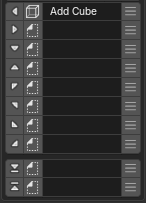
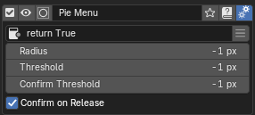

Pie Menu Editor¶
エディター画面¶
トップ¶

- 有効性:
このパイメニューの有効/無効を切り替えます。無効にするとホットキーが無効化されます。
- プレビュー:
パイメニューをプレビュー表示して、レイアウトを事前に確認できます。
- アイテム選択:
エディタに表示するPMEアイテムを切り替えます。アイコンは現在のメニュータイプを示します。
- メニュー名:
パイメニューの名前を設定・変更します。他のメニューから参照する際の識別子としても使用されます。
- タグ:
メニューの分類・検索用のタグを設定します。複数のタグを設定可能です。
- ドキュメント:
Pie Menu Editorのオンラインドキュメントを開きます。
- 詳細設定:
パイメニューの高度な設定オプション（Poll Method、Radius等）を表示・編集します。
Hotkey設定¶

Blenderのキーマップは階層構造です。適切なキーマップを選ぶことで既存のホットキーを安全に上書きできます。既存のホットキーのキーマップやアクションを調べるには、エディタの+ボタンを使用してください。
参考: Keymapの選び方
Press: キーを押す
Hold: キーを押し続ける
Tweak: キーを押しながらマウスを動かす
Double Click: キーをダブルクリックする
Any modifier は Ctrl / Shift / Alt / OSKey の任意の組み合わせです。コンテキスト感応ツールの作成に使えます。
このアドオンではマウスボタンをモディファイアとして使えます（例: LMB+Tab / RMB+Tab / MMB+Tab）。
print("Ctrl is pressed" if E.ctrl else "Ctrl isn't pressed")
メニュースロット¶
{kind=link}
パイメニューは10個のスロットで構成されています：
8方向：上下左右・斜め4方向
最上部・最下部：垂直方向の追加スロット
各スロットの構成要素（左から右へ）：
スロット編集ボタン: スロットエディタを開いて機能を設定
アイコン設定: スロットに表示するアイコンを選択
表示名: スロットのラベルテキストを設定
詳細設定: スロット固有の追加オプション
{kind=link}
詳細設定メニュー¶
{kind=link}
Poll Method: メニューの表示条件を制御するPythonコードを設定します。条件が満たされない場合、メニューは表示されません。
Radius: パイメニューの円の半径を設定します。デフォルト値（-1）で自動設定、カスタム値でアニメーションが無効化されます。
Threshold: フリックモード時のマウス移動距離の閾値を設定します。この距離を超えるとスロットが選択されます。
Confirm Threshold: フリックモード時の確定距離の閾値を設定します。この距離まで移動すると選択が確定されます。
Confirm on Threshold: 閾値に達した時点で自動的に選択を確定するかどうかを設定します。
スロットエディタ¶
スロット編集をクリックすると、スロットエディタが表示されます。 各スロットの機能を設定できます。Pie Menuは以下の機能タイプがあります：

トップ¶
アイコン: スロットに表示するアイコンを選択します。
表示名: スロットのラベルテキストを設定します。ボタンを押すと、提案名を適用します。
OK / Cancel: スロットの選択を確定・キャンセルします。Enter / Escape キーでも確定できます。
タブ¶
5つの機能タイプから選択します：
ボタンがクリックされた時に実行される任意のPythonコードを設定します。
# オペレーターを実行する
bpy.ops.object.mode_set(mode='OBJECT')
# 条件分岐を使用する (Ctrlを押していた場合はモンキーを追加、それ以外は立方体を追加)
O.mesh.primitive_monkey_add() if E.ctrl else O.mesh.primitive_cube_add()
コマンドの記述方法
Blenderの文字列プロパティーは、複数行のコマンドを記述できません。
そのため、複数のコマンドを記述する場合は、セミコロン(;)で区切る必要があります。
参考: Pythonコマンドの記述方法
グローバル変数
利用可能なグローバル変数の例：
C: bpy.context（現在のBlenderコンテキスト）O: bpy.ops（Blenderのオペレーター）E: event（イベント情報）
こちらでさらに詳細なグローバル変数の一覧を確認できます。
オブジェクトのプロパティへのパスを指定し、ウィジェットとして表示します。
例：bpy.context.object.locationでオブジェクトの位置を表示・編集できます。
高度なプロパティ操作
インデックス指定やより複雑なプロパティ操作が必要な場合は、Property Editorを利用してください。
ボタンがクリックされた時にPME内で作成した他のメニューアイテムを呼び出します。 例：
Popup Dialogを
Expand Popup Dialogで表示Regular Menuを
Open on Mouse Overで表示Macro Operatorを実行
ボタンがクリックされた時に、指定されたBlenderのホットキーに割り当てられているオペレーターを検索して実行します。
例：GでGrab（移動）、RでRotate（回転）など、Blenderの標準ホットキーを利用できます。
カスタムなウィジェットレイアウトを描画するためのPythonコードを設定します。
Lはレイアウトオブジェクトを表し、Blenderのレイアウトシステムを使用してUIを構築できます。
# ボックス内にラベルを表示
L.box().label(text=text, icon=icon, icon_value=icon_value)
# 複数のボタンを縦に配置
col = L.column(); operator(col, "mesh.primitive_cube_add", text="立方体"); operator(col, "mesh.primitive_uv_sphere_add", text="球")
Examples¶

一番右のハンバーガーメニュー()を押すと、あらかじめ用意されたいくつかのスロット機能を追加することができます。